What I need from you: the last page lists 13 changes for plan v2.3 (C1 to C13). Tell me which ones to apply. Until then, nothing changes in the plan or the demo.
Most of your questions come down to one thing: where does this number come from? The site has three kinds of numbers. On the real site, each one carries a badge, so nobody mixes them up (change C1).
In the demo you saw, everything is simulated, even the library. The demo shows how the site will look after many writers have shared. On the real site, the library holds only real shared results.
You asked: a user enters the page and selects the type of writer, then the language. Right?
Short answer: yes. Three choices, and no account:
You asked: when the page launches, "Worked clearly: x of x", "Made it worse: x of x", "Ideas that worked" and "What works best for romance writers in Spanish" won't exist, right? They need data from others.
Short answer: right. On launch day nobody has shared anything yet, so those parts are empty. Each group (genre + book language + change) shows numbers only after 5 writers have shared a test. Until then, the page says so honestly, and it never fills the gap with made-up numbers (D26).
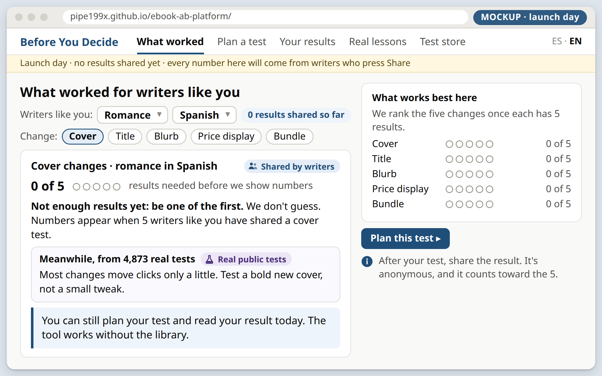
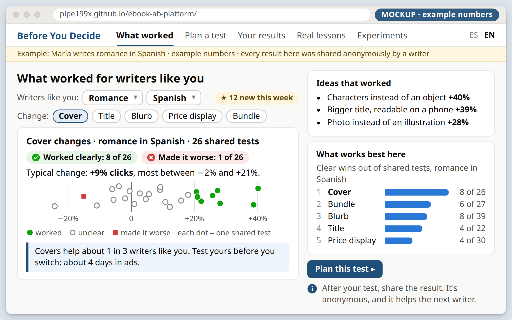
| When | Cover · romance · Spanish | What the writer sees |
|---|---|---|
| Launch day | 0 of 5 | "Not enough results yet: be one of the first." Plus lessons from real headline tests. |
| Some weeks later | 3 of 5 | The same message, with the counter moving. Each share counts. |
| When 5 are in | 5 of 5 | The numbers appear: worked clearly, made it worse, the typical change, the dots. |
You asked: where do you bring that data from? Was it already processed by A/B testing? How are you sure the ideas work? How will we do it in real life?
Short answer: every number in the library comes from a real A/B test that a writer ran with their own two ads, and then chose to share. The library doesn't run tests. It counts finished tests.
Only step 4 sends anything, to our free Cloudflare database. Steps 1 to 3 stay on the writer's computer. Databricks does step 5 each night, and the library shows the new result the next day.
Each dot in the library is one finished test: two ads, the same budget, one change. The tool already gave that writer a verdict. The library puts many tests side by side, like a test of tests. Here is a small example with six writers:
Worked clearly = ad B got more clicks, and the test says it's not luck (p below 0.05).
Made it worse = ad B got fewer clicks, and it's not luck.
Unclear = the test couldn't tell. That's common, and it's useful too.
Typical change = the middle result. Most between = the middle half of the results.
Careful average (behind the scenes) = when a group has few results, it's pulled toward the average of all writers, so one lucky test can't make a big claim.
How are we sure an idea works? We don't promise. We count. "It worked for 2 of 6 writers like you" is a fact about past tests, not a promise about your book. That's why the library always ends with "test yours".
More people clicked the ad, in a fair test. It does not prove more sales. The tool already says "check your sales next month". I suggest the library card says it too, in one line (C4).
Writers can tag a shared test with one idea from a fixed list, for example "photo cover instead of an illustration". There is no free text, so nothing personal can be typed. But the demo shows the ideas in a weak way:
Today, in the demo
Characters on the cover instead of an object (+40%)
This +40% is one single test: the best test that used this idea. One lucky test is not evidence.
Proposed (C3)
Characters instead of an object · worked in 4 of 9 tests · typical +12%
An idea is listed only after 5 tests used it. We show how often it worked, not the best result. (Example numbers.)
In the six-writer example on the previous page, no idea has 5 tests yet, so the card shows no ideas. This also replaces the plan's current rule (§3.12, "the most common idea tags among clear wins"), which favors ideas that many writers simply tried.
Yes, a person could type fake numbers, and we can't see their ad account. So we make cheating hard and limit the damage (D25):
People like to share good news. If only wins get shared, the library looks too rosy. So the Share button appears for every verdict, with "a test that didn't work is just as useful", and we watch the share of wins over time. This is new risk R38 (C10).
Who shares first? See IX: the "Founding writers" plan.
You asked: "Views per day, per ad", "People who click (%)" and "Cost per 1,000 views": where do they come from? Only Meta, or other platforms like Amazon too? A "?" would be fine for writers who don't know.
Short answer: from the writer's ad platform. Every big ad platform reports them, under different names; on some, you divide two numbers. Your "?" idea is good: each box gets a "?" that says where to look (C5).
| Ad platform | Views per day, per ad | People who click (%) | Cost per 1,000 views |
|---|---|---|---|
| Meta Ads Manager Facebook, Instagram | "Impressions" ÷ days the ad ran | "CTR (link click-through rate)" | "CPM (cost per 1,000 impressions)" |
| Amazon Ads for KDP books | "Impressions" ÷ days | "Clicks" ÷ "Impressions" × 100 | Spend ÷ "Impressions" × 1,000 Amazon charges per click |
| BookBub Ads | "Impressions Served" ÷ days | "Click-through Rate (CTR)" | "Effective CPM (eCPM)" |
| TikTok Ads Manager | "Impressions" ÷ days | "CTR (Destination)" | "CPM" |
Names checked on each platform's own help pages on 2026-10-15 (sources at the end). Amazon lets KDP authors advertise their books in 12 stores, including the US, Mexico and Spain, and they pay per click.
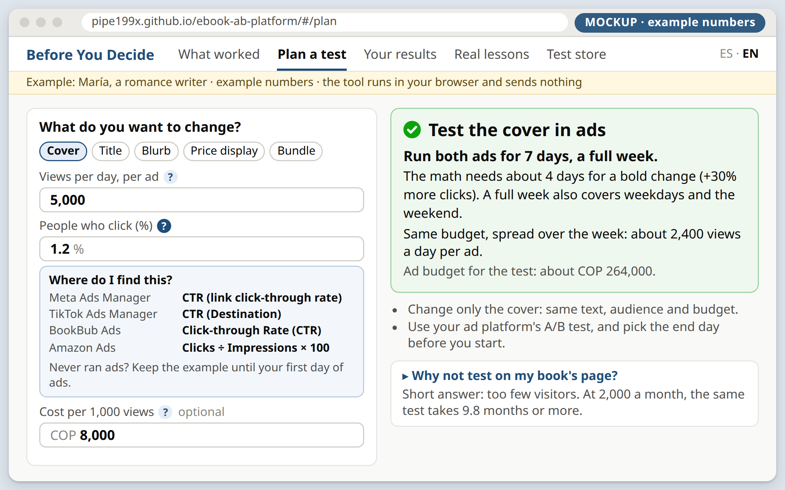
The boxes start with example numbers, clearly marked. After the first day of ads, the writer types their own. Later, when the library has results, it can suggest "writers like you get about 1.1% clicks", from the views and clicks they shared.
TikTok's help says to run a split test for at least 7 days. Ads behave differently on weekdays and weekends, but our tool says "about days".
I suggest: always run the full week, and spread the same budget over 7 days, about views a day per ad. The cost stays the same (C12).
You asked: I don't know what "your sales page" is. Is it optional, for writers with their own web page instead of Amazon or Meta? Where does "on your sales page, the same test takes 9.8 months to 6.7 years" come from?
Short answer: the sales page is the page where people buy the book: the book's Amazon page, the writer's own website, or a shop like Payhip or Hotmart. Yes, it's optional. It's there only to show why testing with ads is much faster.
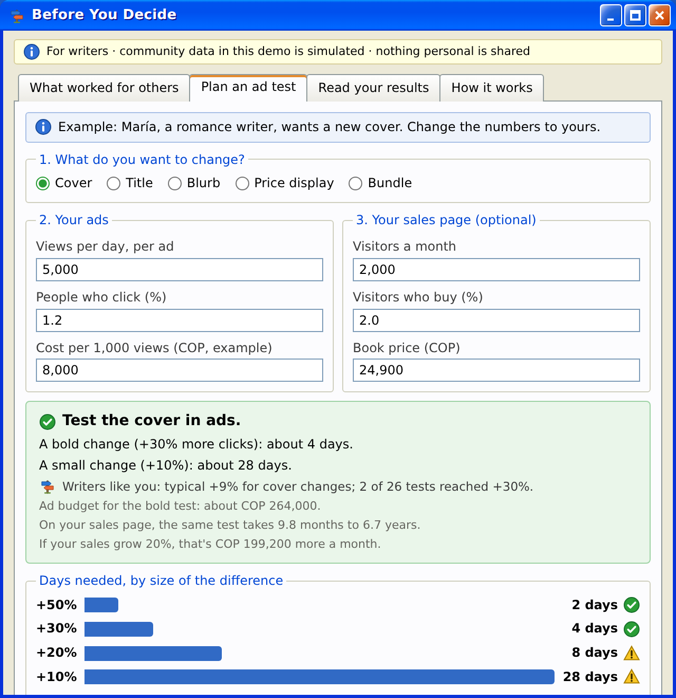
Box 3 starts with example numbers: 2,000 visitors a month, 2 in 100 buy, and a price of COP 24,900. Then it's the same math as section D of the plan:
The line "If your sales grow 20%, that's COP 199,200 more a month" is 2,000 × 2% = 40 sales a month; 20% more is 8 sales × COP 24,900.
Proposed (C6) Move box 3 out of the main form, into a folded "Why not test on my book's page?" box. Curious writers open it and can change the numbers. Everyone else sees only the ad test.
You asked: "Compared with 26 cover tests by writers like you, your +54% beats 100% of them" won't exist at launch either, right? No writers will have shared yet.
Short answer: right. This line needs results from writers like you, so it's hidden at launch. It appears when the group has 5 results (C7).
Launch day
Not enough cover tests from writers like you yet (0 of 5). Share yours to start the library.
Later
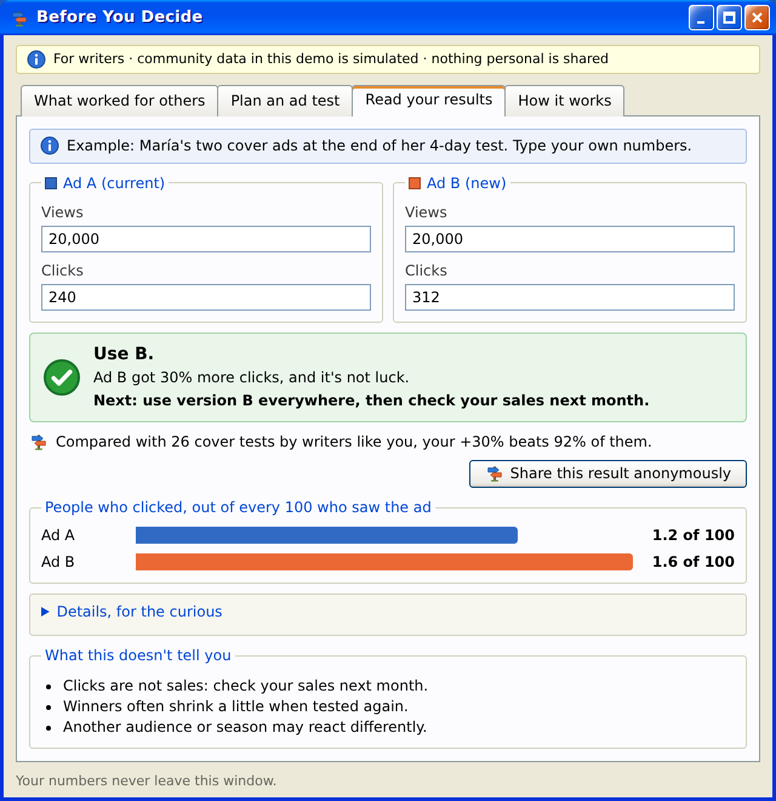
You asked: I like the bookstore, because it shows exactly what A/B testing is. How will it look in the final product? Since it's simulated, what is it for? Is it there to show A/B testing behind the scenes, as if a person were browsing?
Short answer: yes, that's one of its jobs, and it stays simulated forever. In the final product, the 70,000 shoppers are a program, not people on a web page. The demo window shows what that program does, one shopper at a time. No real books are sold and no real money moves.
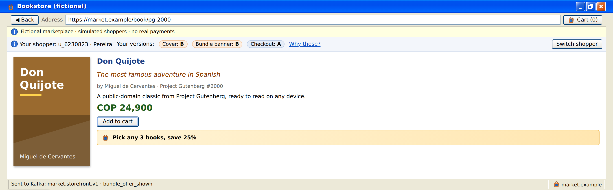
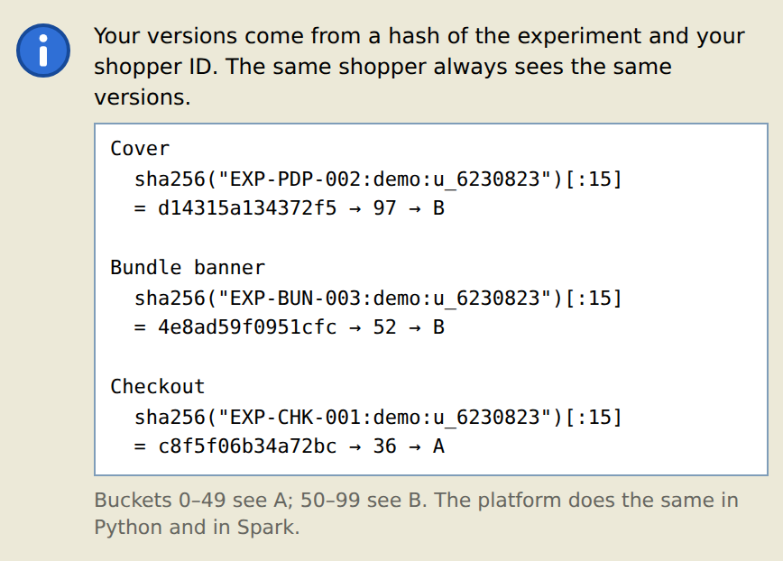
Option (C13), your choice Today the real site has no store page: the store is only a program. You liked this window, so I suggest a page called "See an A/B test from inside", under "Behind the scenes". A visitor picks a shopper, sees which versions they got and why, and watches each click become an event. Clearly labeled "Simulated". About +6 h (4–8). I recommend yes: it explains A/B testing better than any text.
You asked: I don't get the conclusion of "Real Lessons". Please clarify.
In one line: most changes make only a small difference, clear winners are rare, and early winners look bigger than they are. So test bold ideas, run the test to the planned end, and expect a bit less later.
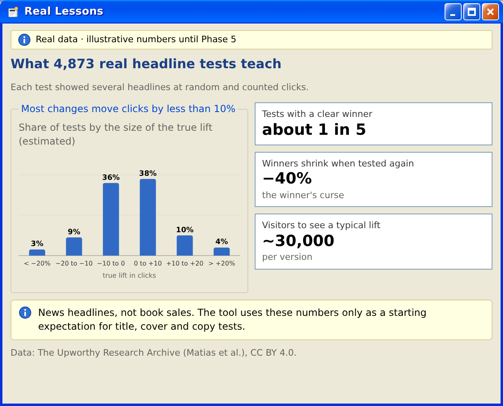
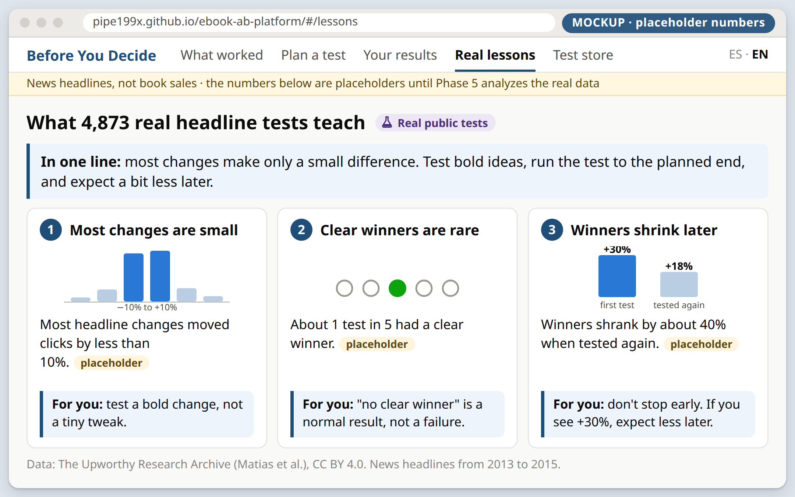
| Lesson | What the data shows (placeholder) | What it means for a writer |
|---|---|---|
| 1 · Most changes are small | Most headline changes moved clicks by less than 10%. | Test a bold change, not a tiny tweak. Small differences need weeks of views. |
| 2 · Clear winners are rare | About 1 test in 5 had a clear winner. | "No clear winner" is a normal result, not a failure. |
| 3 · Winners shrink later | A winner's lift was about 40% smaller when tested again (the "winner's curse"). | Don't stop early. If you see +30%, expect less later. |
Honest note: the demo's numbers (about 1 in 5, −40%, ~30,000) are placeholders. We compute the real ones in Phase 5 from the Upworthy data: 4,873 tests of news headlines, 2013–2015. They are about headlines, not book sales, so the tool uses them only as a starting expectation. If Phase 5 finds different numbers, the lessons change with them.
Why it matters: these lessons are the reason the tool says "test a bold change" and "don't stop early".
You asked: where did that data come from? It's useful, but it may confuse people, because each decision is different. Or does it show the decision most ebooks made, based on A/B tests?
Short answer: it comes from our simulated store. It is not a vote of writers or ebooks. It's three separate tests that the store ran on its own pages, and each test has its own decision.
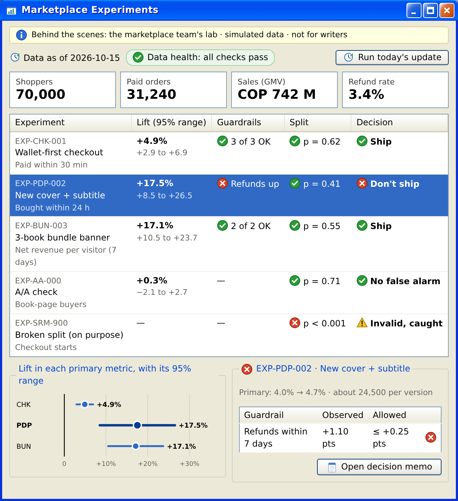
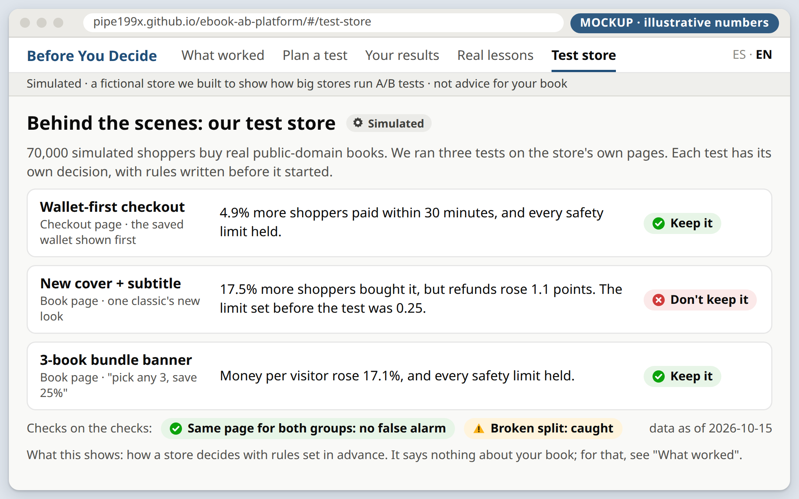
Why the decisions differ: each test changes something different and is judged by its own rules, written before it starts. A big store tests many ideas; some win, some lose.
Why a writer could be confused: this page says "new cover: don't keep it", while the library may say "covers often help". They answer different questions: one fictional store versus many real writers. Hence C9: rename it, place it under "Behind the scenes", and say "not advice for your book".
You asked: how do we sell this project? "Using and sharing your experience, you could help, and make data-driven decisions about how your ebook performs"?
Short answer: your line has the right idea. The tool is free, so "selling" means two things: getting writers to use it, and getting them to share. Here is a shorter version of your line:
↺ The next writer starts at step 1 with one more result. That's the loop that brings writers back.
Shared results per week, and how many groups reached 5. That's all we can count, because the site has no analytics, by design.
More sales. We promise better decisions and fewer guesses.
"I built a free tool that helps indie writers decide with data, not luck. Behind one simple page: Kafka, a Databricks lakehouse and tested statistics, at $0."
C1 to C12 are clarity fixes. I recommend all of them. C13 is optional.
| # | Change | From | Effort |
|---|---|---|---|
| C1 | Badges for the three kinds of numbers: "Shared by writers", "Real public tests", "Simulated". On every page and number block. | I, VI, VIII | 1 h |
| C2 | The library's launch-day state: an "x of 5 results needed" counter per group, "be one of the first", and real headline lessons meanwhile. The ranking waits for 5 results per change. | II | 1 h |
| C3 | An idea is listed only after 5 tests used it, as "worked in W of N · typical +X%". Never one test's result. Replaces the rule in §3.12. | II | 1 h |
| C4 | The library card says what "worked" means: more people clicked the ad, in a fair test. Not sales. | II | 0.25 h |
| C5 | A "?" on each ad box: where to find the number on Meta, Amazon Ads, BookBub and TikTok, and what to do if you never ran ads. | III | 1.5 h |
| C6 | The sales page leaves the main form, into a folded "Why not test on my book's page?" box. | IV | 0.5 h |
| C7 | The "compared with writers like you" line needs 5 results, and uses plain words: "higher than 24 of the 26". | V | 0.25 h |
| C8 | Real lessons becomes three lessons, the conclusion first, each with "what this means for you". | VII | 0.5 h |
| C9 | "Marketplace experiments" becomes "Test store", under "Behind the scenes": one plain sentence per decision, and "not advice for your book". | VIII | 0.5 h |
| C10 | New risk R38, writers may share mostly wins: Share is offered for every verdict, and we watch the share of wins. | II | 0.25 h |
| C11 | The "Founding writers" launch plan, plus a public counter of shared results. | IX | 0.5 h |
| C12 | Run every ad test for at least 7 days (a full week), with the same budget spread over the week. The answer, the checklist and the library advice say so. | III | 0.25 h |
| C13 | Optional: a "See an A/B test from inside" page on the real site, made from the demo's bookstore. Labeled "Simulated". | VI | 6 h (4–8) |
Effort. C1 to C12 add about +7.5 h (5–10). The plan grows from about 146 h to about 154 h (128–178), still about 8 weeks at 20 h a week. C13 adds about +6 h (4–8) more, for about 160 h (132–186), still about 8 weeks.
What to reply: for example "apply all", or "apply C1–C12, skip C13", or any other change. Then I'll update the plan to v2.3, along with its mockups and the demo, render them, and stop for your review. Nothing gets built until you say "start Phase 0".